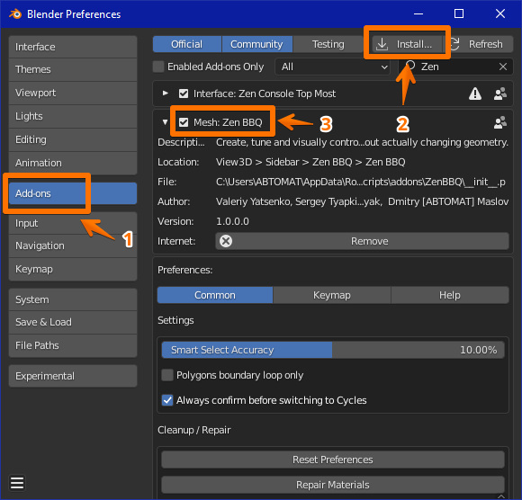

Zen BBQ 1.0 for Blender
Introduction
Installation
Quick Start
N-Panel
Pie Menu
Downloads
Quick Guide How to Bake Normal Map
Troubleshooting
Changelog
Zen BBQ 1.0 for Blender
»
Installation
Zen BBQ Installation
Open
Preferences — Add-ons
window in Blender.
Click
Install
button and choose zip-archive with the add-on.
Make sure that its checkbox is enabled in Blender’s add-on list.

« Previous
Next »